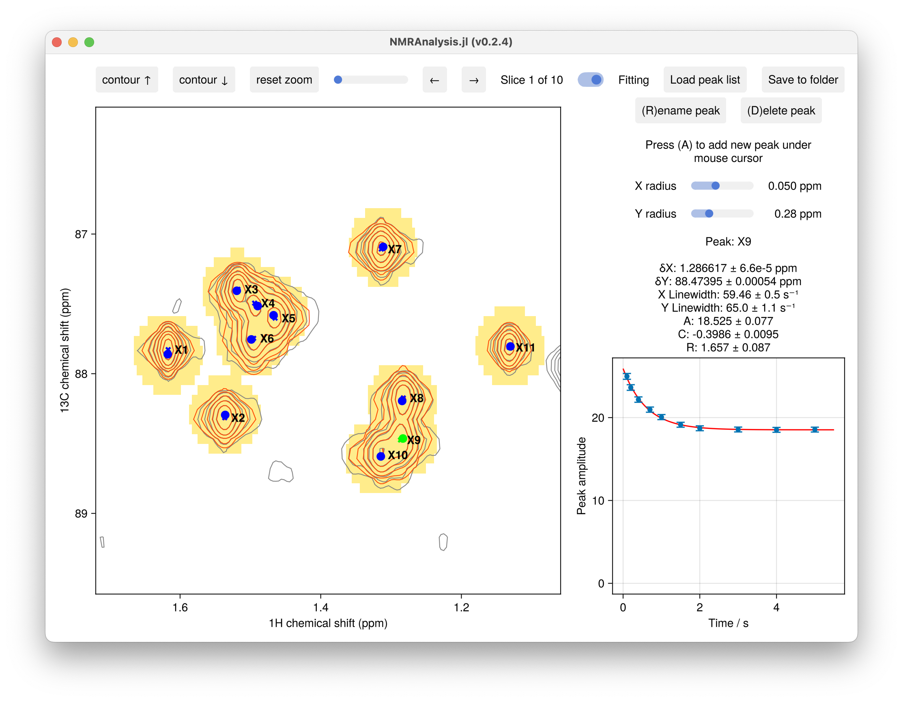

Recovery Analysis
NMRAnalysis.GUI2D.recovery2d — Function
recovery2d(inputfilenames, relaxationtimes)Start an interactive GUI for measuring longitudinal relaxation from an inversion recovery or saturation recovery experiment. Peak amplitudes are fitted to a magnetisation recovery model:
\[I(\tau) = A\left(1 - C\exp(-R\tau)\right)\]
where $R$ is the recovery rate (s⁻¹), $A$ is the equilibrium amplitude, and $C$ is the recovery factor. For an ideal inversion recovery experiment $C = 2$; for saturation recovery $C = 1$.
Arguments
inputfilenames: A single path string (pseudo-3D dataset) or vector of path strings (one file per delay) pointing to processed Bruker data directories.relaxationtimes: Vector of delay times in seconds, or a string giving a path to a text file containing the delays (one per line; lines beginning with#are ignored).
Example
t = [0.1, 0.2, 0.4, 0.7, 1.0, 1.5, 2.0, 3.0, 4.0, 5.0]
recovery2d("33/pdata/1", t)
# Reading delays from a file
recovery2d("33/pdata/1", "vdlist.txt")The recovery2d function measures longitudinal relaxation from an inversion recovery or saturation recovery experiment. Peak amplitudes are fitted to a magnetisation recovery model:
\[I(\tau) = A \left(1 - C \exp\!\left(-R\tau\right)\right)\]
where $R$ is the recovery rate (s⁻¹), $A$ is the equilibrium amplitude, and $C$ is the recovery amplitude factor. For an ideal inversion recovery experiment $C = 2$, while for saturation recovery $C = 1$.

Usage
using NMRAnalysis
# Variable delay list
t = [0.1, 0.2, 0.4, 0.7, 1.0, 1.5, 2.0, 3.0, 4.0, 5.0]
recovery2d("33/pdata/1", t)
# Read delays from a file
recovery2d("33/pdata/1", "vdlist.txt")When the experiment is stored as a pseudo-3D dataset in a single processed directory, a single path string is passed; when each delay is a separate experiment, pass a vector of paths alongside the corresponding delay values.
Output
Clicking Save to folder writes fitted parameters to fit-results.txt. Columns include:
| Column | Description |
|---|---|
label | Peak label |
R_value | Fitted recovery rate R (s⁻¹) |
R_uncertainty | Uncertainty in R (s⁻¹) |
A_value | Equilibrium amplitude A |
A_uncertainty | Uncertainty in A |
C_value | Recovery factor C |
C_uncertainty | Uncertainty in C |